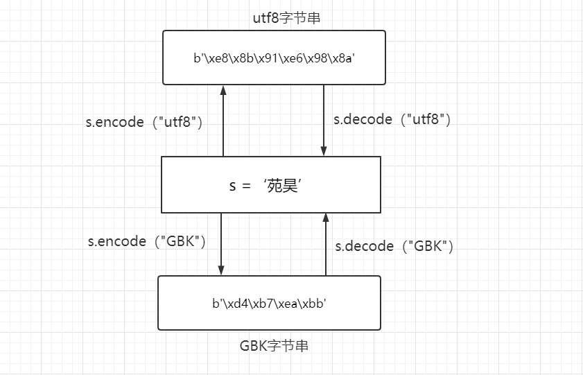
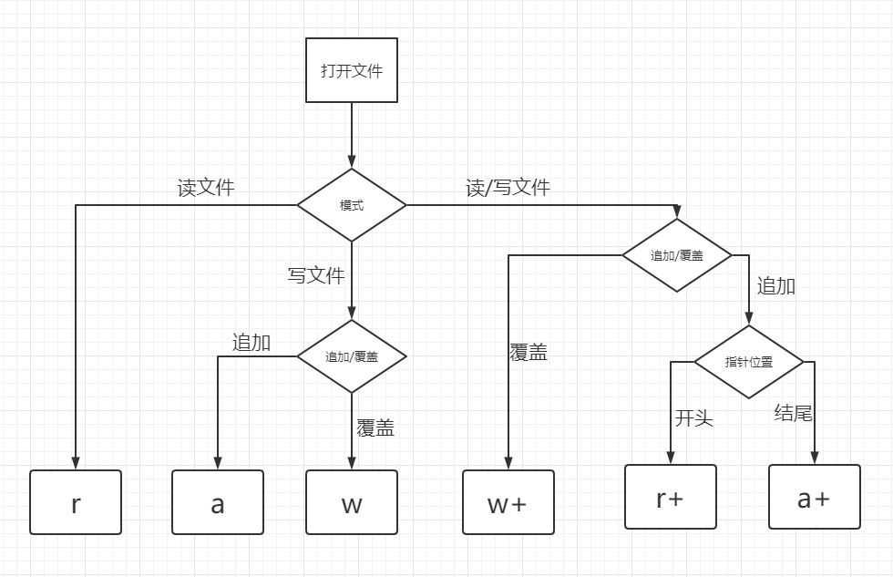

Python 输入输出与文件操作
输入输出与文件操作
编码
ASCII表
众所周知，计算机起源于美国，英文只有26个字符，算上其他所有特殊符号也不会超过128个。字节是计算机的基本储存单位，一个字节(bytes)包括八个比特位(bit),能够表示出256个二进制数字，所以美国人在这里只是用到了一个字节的前七位即127个数字来对应了127个具体字符，而这张对应表就是ASCII码字符编码表，简称ASCII表。后来为了能够让计算机识别拉丁文，就将一个字节的最高位也应用了，这样就多扩展出128个二进制数字来对应新的符号。这张对应表因为是在ASCII表的基础上扩展的最高位，因此称为扩展ASCII表。到此位置，一个字节能表示的256个二进制数字都有了特殊的符号对应。
GBK编码
但是，当计算机发展到东亚国家后，问题又出现了，像中文，韩文，日文等符号也需要在计算机上显示。可是一个字节已经被西方国家占满了。于是，我中华民族自己重写一张对应表，直接生猛地将扩展的第八位对应拉丁文全部删掉，规定一个小于127的字符的意义与原来相同，即支持ASCII码表，但两个大于127的字符连在一起时，就表示一个汉字，这样就可以将几千个汉字对应一个个二进制数了。而这种编码方式就是GB2312，也称为中文扩展ASCII码表。再后来，我们为了对应更多的汉字规定只要第一个字节是大于127就固定表示这是一个汉字的开始，不管后面跟的是不是扩展字符集里的内容。这样能多出几万个二进制数字，就算甲骨文也能够用了。而这次扩展的编码方式称为GBK标准。当然，GBK标准下，一个像”苑”这样的中文符号，必须占两个字节才能存储显示。
Unicode与utf8编码
与此同时，其它国家也都开发出一套编码方式，即本国文字符号和二进制数字的对应表。而国家彼此间的编码方式是互不支持的，这会导致很多问题。于是ISO国际化标准组织为了统一编码，统计了世界上所有国家的字符，开发出了一张万国码字符表，用两个字节即六万多个二进制数字来对应。这就是Unicode编码方式。这样，每个国家都使用这套编码方式就再也不会有计算机的编码问题了。Unicode的编码特点是对于任意一个字符，都需要两个字节来存储。这对于美国人而言无异于吃上了世界的大锅饭，也就是说，如果用ASCII码表，明明一个字节就可以存储的字符现在为了兼容其他语言而需要两个字节了，比如字母I，本可以用01001001来存储，现在要用Unicode只能是00000000 01001001存储，而这将导致大量的空间被浪费掉。基于此，美国人创建了utf8编码，而utf8编码是一种针对Unicode的可变长字符编码方式，根据具体不同的字符计算出需要的字节，对于ASCII码范围的字符，就用一个字节，而且符号与数字的对应也是一致的，所以说utf8是兼容ASCII码表的。但是对于中文，一般是用三个字节存储的。
编码和解码
s = "张三"
b1 = s.encode()
b2 = s.encode("GBK")
print(b1) # 默认utf8 : b'\xe8\x8b\x91\xe6\x98\x8a'
print(b2) # b'\xd4\xb7\xea\xbb'
print(b1.decode()) # 这里如果用GBK解码就会出现乱码
print(b2.decode("GBK"))
print(type(b1)) # <class 'bytes'>
print(type(b2)) # <class 'bytes'>

Python 3 最重要的新特性大概要算是对文本和二进制数据作了更为清晰的区分，不再会对bytes字节串进行自动解码。文本总是Unicode，由str类型表示，二进制数据则由bytes类型表示。Python 3不会以任意隐式的方式混用str和bytes，正是这使得两者的区分特别清晰。
输入
一个程序如果使用文件作为输入系统要考虑的三件事：文件是否存在，文件是否有可读权限，使用正确的文件编码。
文件是否存在
import pathlib
import sys
path = pathlib.Path("d:\\ab.txt")
if path.is_file():
print(f"{path} 是文件")
else:
print(f"{path} 不是文件, 请重新创建文件")
# 退出程序
sys.exit(1)
文件是否有可读取权限
import pathlib
import os
path = pathlib.Path("d:\\a.txt")
if os.access(path, os.R_OK):
print("文件可以读取")
if os.access(path, os.W_OK):
print("文件可以写入")
正确的文件编码
# pip3 install chardet
# chardet 是第三方库，需要通过 pip 命令为 Python 安装后使用
from chardet.universaldetector import UniversalDetector
detector = UniversalDetector()
with open("d:\\temp\\a.txt", "rb") as f:
detector.feed(f.read())
detector.close()
print(detector.result)
# {'encoding': 'utf-8', 'confidence': 0.7525, 'language': ''}
以上代码，对文件进行判断之后，通过 detector.result 得到一个字典，其中字典 encoding 键对应的值就是文件的编码，我将这段代码运行在 Windows 上面，如果文件为 utf-8 编码，打开文件时在 open() 函数中增加 encoding=utf8 参数，否则不加。
打开文件
在 Python中，如果想要操作文件，首先需要创建或者打开指定的文件，并创建一个文件对象，而这些工作可以通过内置的 open() 函数实现。open() 函数用于创建或打开指定文件，该函数的常用语法格式如下：
file = open(file_name [, mode='r' [ , buffering=-1 [ , encoding = None ]]])
此格式中，用 [] 括起来的部分为可选参数，即可以使用也可以省略。其中，各个参数所代表的含义如下：
'''
- file：表示要创建的文件对象。
- file_name：要创建或打开文件的文件名称，该名称要用引号（单引号或双引号都可以）括起来。需要注意的是，如果要打开的文件和当前执行的代码文件位于同一目录，则直接写文件名即可；否则，此参数需要指定打开文件所在的完整路径。
- mode：可选参数，用于指定文件的打开模式。可选的打开模式如表 1 所示。如果不写，则默认以只读（r）模式打开文件。
- buffering：可选参数，用于指定对文件做读写操作时，是否使用缓冲区。
- encoding：手动设定打开文件时所使用的编码格式，不同平台的 ecoding 参数值也不同，以 Windows 为例，其默认为 cp936（实际上就是 GBK 编码）。
'''
open() 函数支持的文件打开模式如表 1 所示。
| 模式 | 意义 | 注意事项 |
|---|---|---|
| r | 只读模式打开文件，读文件内容的指针会放在文件的开头。 | 操作的文件必须存在。 |
rb |
以二进制格式、采用只读模式打开文件，读文件内容的指针位于文件的开头，一般用于非文本文件，如图片文件、音频文件等。 | |
| r+ | 打开文件后，既可以从头读取文件内容，也可以从开头向文件中写入新的内容，写入的新内容会覆盖文件中等长度的原有内容。 | |
rb+ |
以二进制格式、采用读写模式打开文件，读写文件的指针会放在文件的开头，通常针对非文本文件（如音频文件）。 | |
| w | 以只写模式打开文件，若该文件存在，打开时会清空文件中原有的内容。 | 若文件存在，会清空其原有内容（覆盖文件）；反之，则创建新文件。 |
wb |
以二进制格式、只写模式打开文件，一般用于非文本文件（如音频文件） | |
| w+ | 打开文件后，会对原有内容进行清空，并对该文件有读写权限。 | |
wb+ |
以二进制格式、读写模式打开文件，一般用于非文本文件 | |
| a | 以追加模式打开一个文件，对文件只有写入权限，如果文件已经存在，文件指针将放在文件的末尾（即新写入内容会位于已有内容之后）；反之，则会创建新文件。 | |
| ab | 以二进制格式打开文件，并采用追加模式，对文件只有写权限。如果该文件已存在，文件指针位于文件末尾（新写入文件会位于已有内容之后）；反之，则创建新文件。 | |
| a+ | 以读写模式打开文件；如果文件存在，文件指针放在文件的末尾（新写入文件会位于已有内容之后）；反之，则创建新文件。 | |
| ab+ | 以二进制模式打开文件，并采用追加模式，对文件具有读写权限，如果文件存在，则文件指针位于文件的末尾（新写入文件会位于已有内容之后）；反之，则创建新文件。 |
将以上几个容易混淆的文件打开模式的功能做了很好的对比：

open()返回的文件对象常用的属性：
'''
- file.name：返回文件的名称；
- file.mode：返回打开文件时，采用的文件打开模式；
- file.encoding：返回打开文件时使用的编码格式；
- file.closed：判断文件是否己经关闭。
'''
注意，当操作文件结束后，必须调用 close() 函数手动将打开的文件进行关闭，这样可以避免程序发生不必要的错误。
读文件
Python提供了如下 3 种函数，它们都可以帮我们实现读取文件中数据的操作：
read()函数：逐个字节或者字符读取文件中的内容；readline()函数：逐行读取文件中的内容；readlines()函数：一次性读取文件中多行内容。
# (1) 读字符
f = open("满江红",encoding="utf8")
print(f.read()) # 默认读取所有字符
print(f.read(3))
print(f.readline())
print(f.readlines())
# (2) 读字节
f = open("满江红",mode="rb")
print(f.read())
print(f.read(2))
print(f.read(3))
print(f.read(2).decode())
print(f.read(12).decode())
# (3) 循环读文件
f = open("满江红",encoding="utf8")
for line in f.readlines():
print(line,end="")
for line in f:
print(line,end="")
输出
使用文件作为输出时，也要考虑两件事：文件要保存的文件夹是否存在；如果文件夹不存在，你要如何创建文件夹。
import pathlib
import sys
import os
dir = "d:\\dir1\\dir2"
path = pathlib.Path(dir)
if path.is_dir():
print(f"{path} 文件夹存在")
else:
print(f"文件夹不存在，创建{path} 文件夹")
# 创建多级文件夹
os.makedirs(dir)
以上代码实现了判断文件夹是否存在，如果不存在的话自动创建多级文件夹操作。
上面代码的第 7 行和第 14 行需要你特别注意，其中第 7 行实现了对文件夹类型的判断。第 14 行使用了 os 库的 makedirs() 函数创建多级文件夹。os 库创建文件夹有两个函数，分别为 mkdir() 和 makedirs() ，前者可以创建一级文件夹，后者可以创建多级文件夹。当你需要创建文件夹时，可以根据不同的需求使用不同的函数。
写文件
f = open("满江红new",mode="w",encoding="utf8") # w:覆盖模式 a: 追加模式
f.write("怒发冲冠，凭栏处、潇潇雨歇。\n")
f.writelines(["抬望眼,","仰天长啸，壮怀激烈"]) # 将字符串列表写入文件中
f.flush()
import time
time.sleep(100)
f.close() # 没有close，只有在程序退出时才会被释放掉
input()函数
命令行参数 argparse
import argparse
parser = argparse.ArgumentParser(description="这个程序用来演示 argparse 的用法")
parser.add_argument("echo", help="echo the string you use here")
parser.add_argument("-v", "--verbosity", type=int, choices=[0, 1, 2], help="increase output verbosity")
args = parser.parse_args()
print(args.echo)
三种常用的格式化输出方式
-
百分号 %
-
format() 函数
- https://docs.python.org/zh-cn/3.10/library/stdtypes.html#str.format
-
f-strings(推荐方法)
- F-strings 是 Python3.6 新增的字符串格式化功能
- 比百分号和 str.format() 更友好
- 采用了早期为字符串添加关键字方式，如“u”、"r”、“b"
- 官方文档:https://peps.python.org/pep-0498
- F-strings 的{}可以实现数字计算、字符串连接、函执行等计算任务
- 嵌入的内容可解释执行
f"{1 + 2}"
f"{'a' + 'b'}"
f"{print('c')}"
print(f"我的名字叫{name},我的年龄{age}!")
print() 函数
print() 函数由两部分构成 ：
- 指令：print
- 指令的执行对象，在 print 后面的括号里的内容
而 print() 函数的作用是让计算机把你给它的指令结果，显示在屏幕的终端上。这里的指令就是你在 print() 函数里的内容。
比如在上一章节中，我们的第一个 Python 程序，打印 print('Hello Python')
它的执行流程如下：
- 向解释器发出指令，打印 ‘Hello Python’
- 解析器把代码解释为计算器能读懂的机器语言
- 计算机执行完后就打印结果
可能这里有人会问，为什么要加单引号，直接 print(Hello Python) 不行吗？
如果你写代码过程中，有这样的疑问，直接写一下代码，自己验证一下是最好的。
显然，去掉单引号后，运行结果标红了（报错），证明这是不可以的。
主要是因为这不符合 Python 的语法规则，去掉单引号后， Python 解释器根本没法看懂你写的是什么。
所以就报 SyntaxError: invalid syntax 的错误，意思是：语法错误。说明你的语句不合规则。
使用 open() 函数打开文件
file_handler = open("afile")
//返回内容
name='a.file' mode='r' ecoding='UTF-8'
- 如果没有报错，文件打开成功
- 为了避免误操作，默认为只读方式打开文件
文件路径处理
如果打开文件的路径不正确，会提示如下错误：
FileNotFoundError: [Errno 2] No such file or directory: 'xxx.filet'
解决办法：
打开文件时增加路径
进入指定路径后，再打开文件
file_handler = open("/tmp/afile")
import os
os.chdir("/tmp")
file_handler = open("afile")
文件打开模式
file_handler = open("/tmp/afile", mode="r")